Handguns6
Sidearms. The two .44 guns (.44 Magnus and Iron Condor) hit hardest at 56 per bullet; only the Möller PP, Klaucke 17 and .44 Magnus take a handgun silencer.
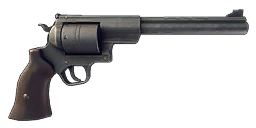
.44 · 56 dmg · Base gameMöller PP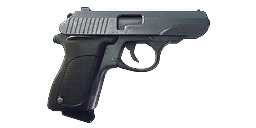
.32 ACP · 25 dmg · Base gameKlaucke 17EXP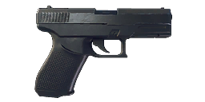
9mm · 28 dmg · Base gameVolkov PistolDLC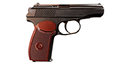
9mm · 28 dmg · Eastern European Weapons PackN9 HandgunDLC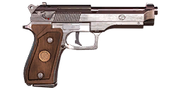
9mm · 28 dmg · US Weapons PackIron CondorDLC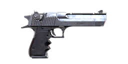
.44 · 56 dmg · Heavy Weapons PackSubmachine guns4
Fast-firing pistol-calibre guns for close range.
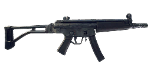
9mm · 24 dmg · Base gameM/46 "Kpist" SMGEXP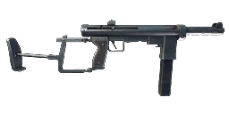
9mm · 24 dmg · Base gameVosa vz.68DLC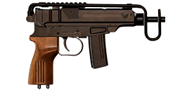
.32 ACP · 25 dmg · Eastern European Weapons PackCOM-10 SMGDLC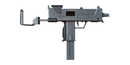
9mm · 24 dmg · US Weapons Pack 2Assault rifles5
All-round automatic rifles in 5.56mm, 7.62mm and 9x39mm.
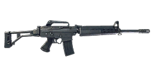
5.56mm · 20 dmg · Base gameAutomatgevär 4EXP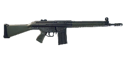
7.62mm · 33 dmg · Base gameAI-76 Assault RifleEXP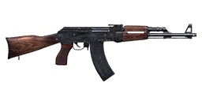
7.62mm · 33 dmg · Base gameAT-WAD Assault RifleDLC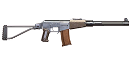
9x39mm · 27 dmg · Soviet Weapons PackN16 Assault RifleDLC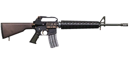
5.56mm · 20 dmg · US Weapons PackMachine guns5
Big magazines of 5.56mm or 7.62mm for sustained fire.
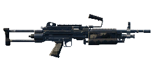
5.56mm · 20 dmg · Base gameKvm 59 Machine GunEXP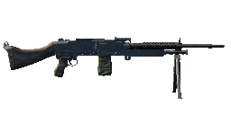
7.62mm · 33 dmg · Base gameN144 MinigunDLC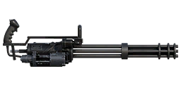
7.62mm · 33 dmg · Heavy Weapons PackPM-71 Machine GunDLC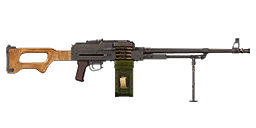
7.62mm · 33 dmg · Eastern European Weapons PackN60 Machine GunDLC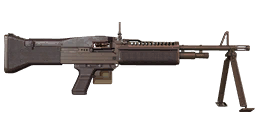
7.62mm · 33 dmg · US Weapons PackHunting rifles3
Long-range hunting rifles with 100-damage rounds (or 7.62mm for the Vintovka).
 .243 · 100 dmg · Base game"Älgstudsare" Hunting RifleEXP
.243 · 100 dmg · Base game"Älgstudsare" Hunting RifleEXP .270 · 100 dmg · Base gameVintovka 1891DLC
.270 · 100 dmg · Base gameVintovka 1891DLC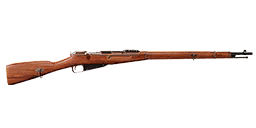
7.62mm · 33 dmg · Eastern European Weapons PackSniper rifles3
Long-range rifles. The Kotenok and S21 fire 7.62mm but have the highest quality multipliers in the game.
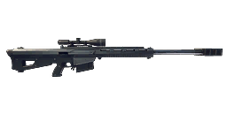
.50 BMG · 100 dmg · Base gameKotenok Sniper RifleDLC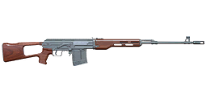
7.62mm · 33 dmg · Soviet Weapons PackS21DLC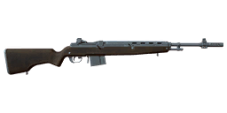
7.62mm · 33 dmg · US Weapons Pack 2Shotguns3
12 gauge: slugs for one heavy hit, birdshot and buckshot for many pellets at short range.
 12ga · 100 dmg · Base gameSjöqvist Semi-AutoEXP
12ga · 100 dmg · Base gameSjöqvist Semi-AutoEXP 12ga · 100 dmg · Base gameRACS-12 Semi-Auto ShotgunDLC
12ga · 100 dmg · Base gameRACS-12 Semi-Auto ShotgunDLC 12ga · 100 dmg · Heavy Weapons Pack
12ga · 100 dmg · Heavy Weapons PackLaunchers4
Explosive rounds whose damage is a blast, not a bullet.
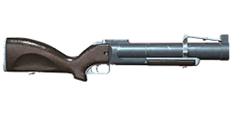
Launcher rounds · blast 290 · US Weapons Pack 2Granatgevär m/49EXP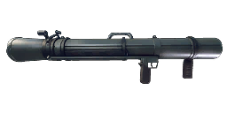
Launcher rounds · blast 580 · Base gameMGR-6 Grenade LauncherDLC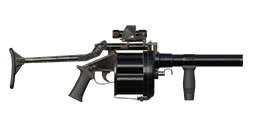
Launcher rounds · blast 290 · Heavy Weapons PackRLG-7DLC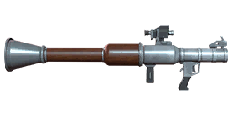
Launcher rounds · blast 700 · Soviet Weapons PackBows and flamethrowers2
The Resistance bow (plain, flare and explosive arrows whose blast grows with draw) and the flamethrower.
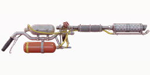
Other ammo · Resistance Weapons PackMelee3
Bat, pitchfork and sledgehammer. The files keep only their quality multipliers, not the hit damage.
 Resistance Weapons PackSledgehammerEXP
Resistance Weapons PackSledgehammerEXPThrowables3
Grenades, Molotov cocktails and snowballs: a blast (and fire) where they land.
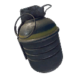
blast 440 · Base gameMolotov CocktailDLC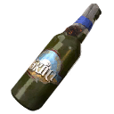
blast 25 · Tactical Equipment PackSnowballBase gameComparison table41 weapons
Every weapon side by side. Click a column header to sort; use the chips to narrow the list to one category, to base game or DLC weapons, or to weapons with an experimental version.


How to read the columns
In Generation Zero the damage of a shot is set by the ammunition, not by the gun: every 7.62mm weapon, from the AI-76 to the Kotenok, fires the same 33-damage bullet. What the gun adds is a quality multiplier (listed on each weapon page): a Dilapidated copy usually does ×0.5 of that, a Special one ×1.0. A few weapons have their own multipliers – the Kotenok (up to ×1.4), the S21 (up to ×1.6) and the Kvm 89 (×1.1 at Special).
- Standard ammo
- FMJ where there is one, the slug for shotguns, the plain arrow for the bow, the high-explosive round for launchers. Each weapon page lists every ammo, including buckshot (9 pellets) and birdshot (25 pellets).
- Damage
- Base damage of one bullet, slug or arrow of the standard ammo. Empty for rounds whose projectile does no damage itself (launchers, flamethrower).
- Best shot
- Damage × the weapon's best non-experimental quality multiplier: what one shot of the standard ammo does at most, at close range.
- Blast / burn
- Area damage to machines for explosive ammo and throwables; for the flamethrower its burn (damage per tick / tick length).
- Qualities
- The lowest and highest quality the weapon comes in; a pink Q6 badge means it also has an experimental version (the badge opens it on the experimental weapons page).
- Range / falloff
- Farthest the projectile flies, and how its damage drops with distance.